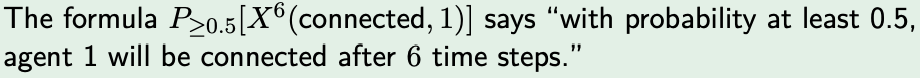

The research as a whole focuses on developing a parameterised way to establish whether or not a swarm displays a certain global emergent behaviour as a result of the sophisticated patterns of interactions among the agents to drone swarm algorithms, the novel challenge being that the number of drones to consider is unbounded and can change at runtime. To be able to tackle this problem the logic framework of choice needed had to be highly parameterized and temporal, in order to account for changing behaviour of drone swarms over time and the fact that the number of drones is unbounded and a changing number of drones are involved. For example, we may wish to establish whether a local behaviour results in an overall pattern. Probabilistic Computational Tree Logic (PCTL) satisfies these demands.
Computational Tree Logic (CTL) is a branching-time logic, meaning its model of time is a tree-like structure where the future is not determined (many paths in the future). Often used for model checkers in deterministic software verification applications. The researcher opted for the adapted Probabilistic Computational Tree Logic (PCTL) due to the probabilistic, non-deterministic nature of drone swarm evolution.
One possible well defined grammar for PCTL is as follows:
Clearly p is a standard prepositional atom, while ùúô is a general PCTL type. Standard logical features from propositional logic are evidently still valid. Œª is a probability threshold, which is also present for each agent/drone as the final item in the tuple representation of the agent that is actually used in the Markov Chain. 
In the work carried out by the researcher, path formulas and state formulas are represented by a slightly more domain specific adaptation of PCTL whose details will be omitted in this introduction, but as an overview the definition also allows the researcher to: